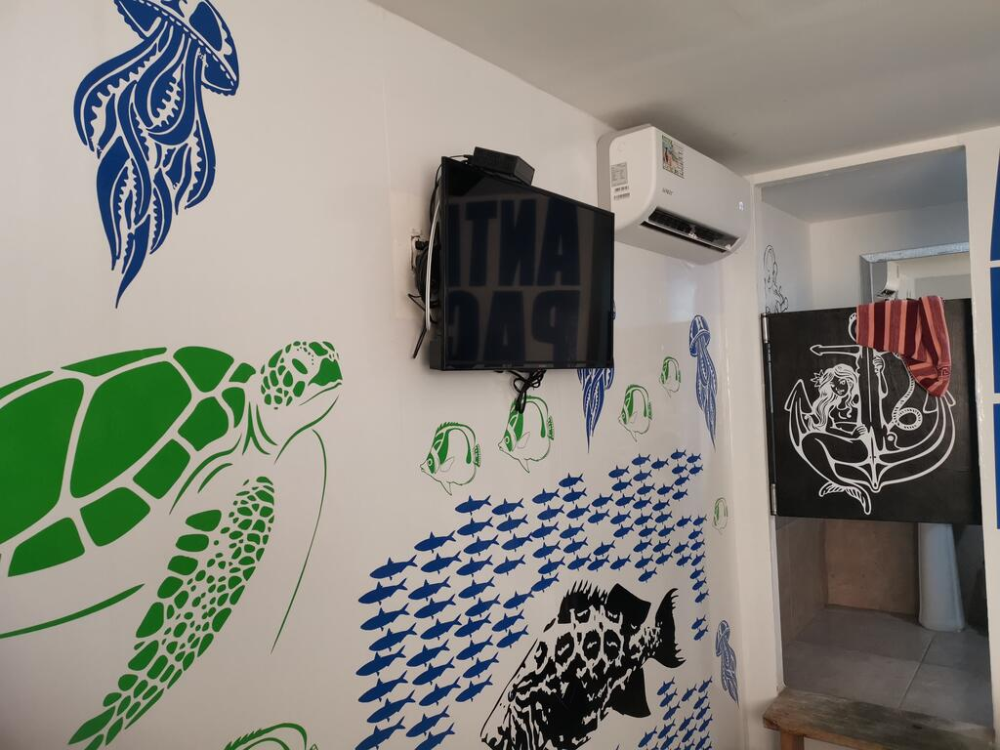

HOSTALES EN PANAMÁ
Hostal Familiar Carmencita
Calle Ricardo Miró Nuevo Reparto El Carmen, H1B, Bellavista, Panamá, Panamá – Mostrar mapa – Cerca del metro,Traslado al aeropuerto.
El Hostal Familiar Carmencita ofrece habitaciones con aire acondicionado y TV de pantalla plana por cable en el distrito Bella Vista de la ciudad de Panamá. El establecimiento está a 7 km del estadio nacional Rod Carew y a 9 km del puente de las Américas, y ofrece un salón común y un jardín. El alojamiento ofrece recepción 24 horas, servicio de enlace con el aeropuerto, cocina compartida y conexión WiFi-gratuita en todas las instalaciones.
Todas las habitaciones tienen armario.
El Hostal Familiar Carmencita dispone de terraza.
El cerro Ancón se encuentra a 9 km del alojamiento, mientras que la catedral de Panamá Viejo está a 6 km. El aeropuerto más cercano es el de Paitilla, situado a 6 km del Hostal Familiar Carmencita.
Nuestros clientes dicen que esta parte de Panamá es su favorita, según los comentarios independientes.
¡Hablamos tu idioma!
Hostal Pura Vida
|  | |
|
Panamá corregimiento de San Miguelito, urbanización Villa Gabriela, Etapa 1 Apart. 11, PH Z, Panamá, Panamá
El Hostal pura vida está situada en la ciudad de Panamá, a 8 km del estadio nacional Rod Carew, y ofrece alojamiento con restaurante, aparcamiento privado gratuito, piscina al aire libre y bar. También cuenta con salón compartido, jardín y casino. El alojamiento cuenta con entretenimiento nocturno y recepción 24 horas.
Todas las habitaciones del establecimiento cuentan con TV de pantalla plana con canales vía satélite, cocina y zona de comedor. Todas las habitaciones del Hostal pura vida tienen zona de estar.
El establecimiento sirve un desayuno continental o buffet.
En el Hostal pura vida se puede jugar al billar y al ping pong.
El establecimiento se encuentra a 14 km del cerro Ancón y a 15 km del puente de las Américas. El aeropuerto más cercano es el de Paitilla, situado a 12 km del Hostal pura vida. El establecimiento ofrece un servicio de enlace con el aeropuerto por un suplemento.
¡Hablamos tu idioma!
Nomada Guesthouse
Calle 55 Este, Bellavista, Panamá, Panamá
El Urban Loft se encuentra en Panamá, a 8 km del estadio nacional Rod Carew y del puente de las Américas, y ofrece alojamiento con WiFi gratuita, aire acondicionado y acceso a un jardín.
Los alojamientos disponen de patio, cocina totalmente equipada con microondas, zona de estar con sofá, TV de pantalla plana y baño privado con ducha y artículos de aseo gratuitos. El establecimiento proporciona toallas y ropa de cama por un suplemento.
El aparthotel ofrece servicio de limpieza en seco e instalaciones de negocios, como fax y fotocopiadora.
El Urban Loft se encuentra a 9 km del cerro Ancón y a 6 km del Museo del Canal de Panamá. El aeropuerto más cercano es el de Paitilla, ubicado a 6 km.
Nuestros clientes dicen que esta parte de Panamá es su favorita, según los comentarios independientes.
A las parejas les encanta la ubicación — Le han puesto un 9,4 para viajes de dos personas.
¡Hablamos tu idioma!
Finca La Esperanza - Cerro Azul
Unnamed Road Cerro Azul, Panama, Panamá, Panamá
La Finca La Esperanza - Cerro Azul se encuentra en Ciudad de Panamá, a 41 km del estadio nacional Rod Carew, y alberga un centro de spa y bienestar. El establecimiento está a unos 52 km del cerro Ancón y a 59 km del puente de las Américas. El establecimiento cuenta con zona de barbacoa.
Todas las habitaciones del establecimiento están equipadas con zona de estar, TV de pantalla plana con canales por cable y baño privado con artículos de aseo gratuitos y ducha.
La Finca La Esperanza - Cerro Azul cuenta con bañera de hidromasaje. En los alrededores se puede practicar senderismo.
El personal de la recepción 24 horas habla inglés y español y puede facilitar información sobre la zona.
La Finca La Esperanza - Cerro Azul está a 37 km de la catedral de Panamá Viejo y a 45 km del Museo del Canal de Panamá. El aeropuerto internacional de Tocumen está a 22 km.
A las parejas les encanta la ubicación — Le han puesto un 8,6 para viajes de dos personas.
¡Hablamos tu idioma!
Natural Home in Panamá City
Calle 77 Oeste Casa 14B, Panamá, Panamá
El Natural Home in Panamá City ofrece habitaciones con aire acondicionado y un bar en Ciudad de Panamá, a 11 km del puente de las Américas. El establecimiento se encuentra a 11 km del cerro Ancón y a 18 km del estadio nacional Rod Carew y dispone de jardín y terraza. El parque nacional Metropolitano y el palacio presidencial se encuentran a 8 km.
Todas las habitaciones están equipadas con armario. Los alojamientos del Natural Home in Panamá City tienen zona de estar.
Todas las mañanas se sirve un desayuno continental o vegetariano en el alojamiento.
La catedral de Panamá Viejo se encuentra a 3,7 km del Natural Home in Panamá City, mientras que el Museo del Canal de Panamá está a 7 km. El aeropuerto más cercano es el de Paitilla, ubicado a 8 km.
¡Hablamos tu idioma!